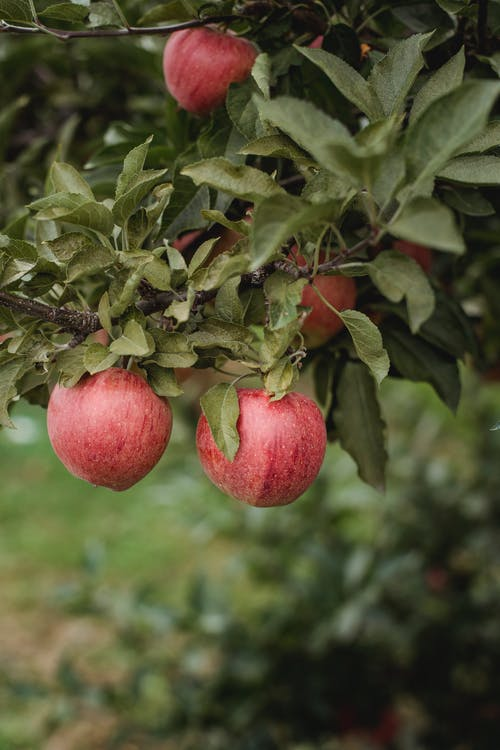

Pick Your Own
All the fruits in FAIRVIEW VALLEY ORCHARDS, you can pick your own fruit throughout the year. Exact ripening times vary depending on the weather, please contact us or check the website the updated information before your visit.
(289) 000-0000

Peaches
Our passion. Yello or white with sweet and full flavour. Peaches will be ripe in Mid August.
Cherries
Sweet cherries will be ripe in Early July. Sour cherries will be ripe in Mid July.

Apples
Crisp and juicy. Eat as fresh or baking. Availble from mid-September to mid-October.